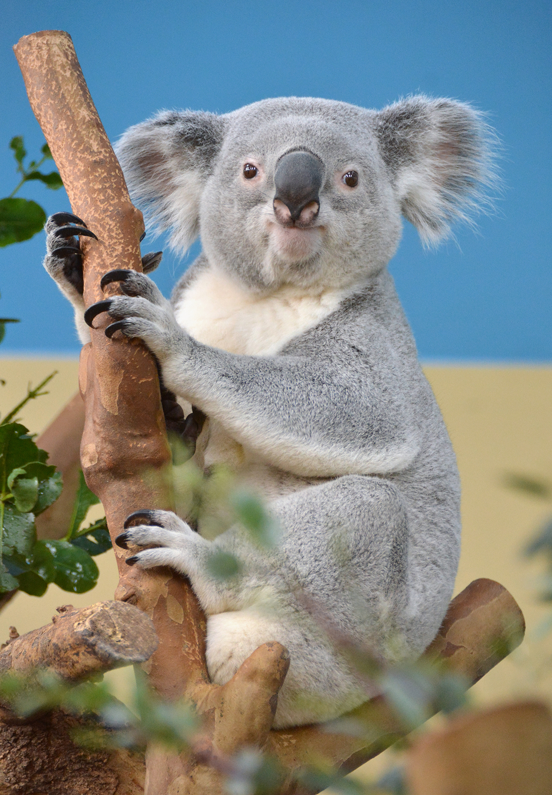
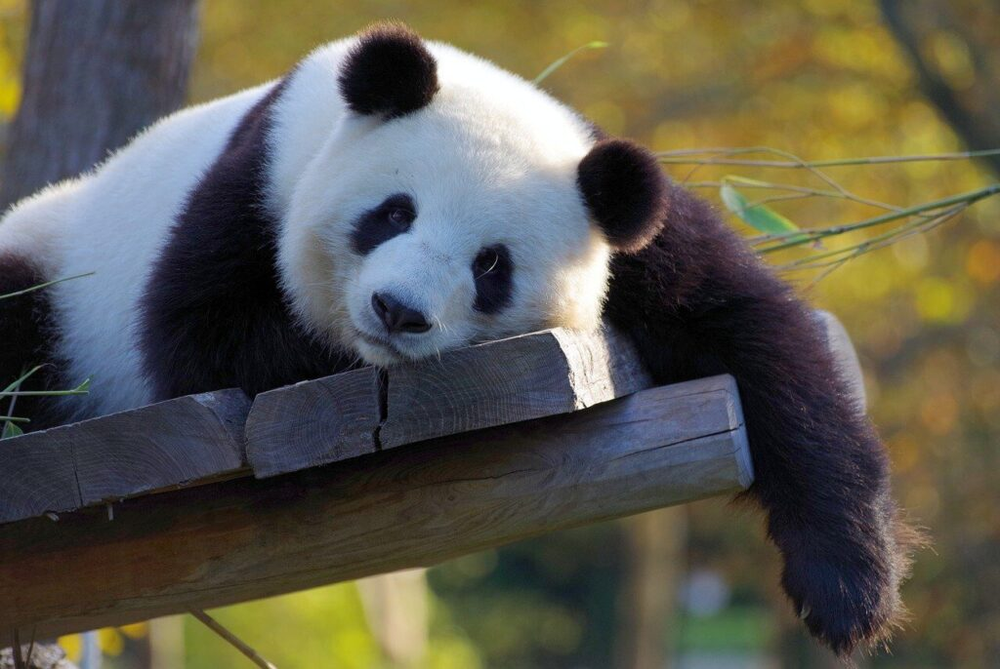
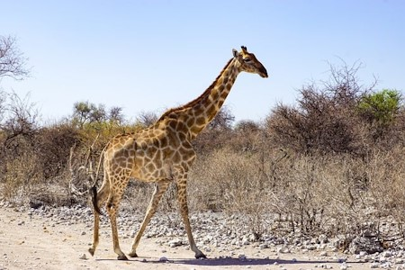

Fedezd fel hét kontinens élővilágát!
Utazd be a Föld minden táját, találkozz több
mint 8000 különleges állattal egy páratlanul
lenyűgöző műemléki állatkertben.

Koala Tudj meg többet
A koala (Phascolarctos cinereus) Ausztráliában
őshonos erszényes, növényevő állat, a koalafélék
(Phascolarctidae) családjának egyedüli élő
képviselője. A koala szó a katang bennszülött
nép nyelvéből származik, jelentése „nem ivó”.

Panda Tudj meg többet
Az óriáspanda (Ailuropoda melanoleuca), eredeti rendszertani nevén Ursus melanoleuca (fekete-fehér medve), vagy bambuszmedve a medvefélék (Ursidae) családjába tartozó emlős. Elterjedése csak maradványfoltokra korlátozódik Közép- és Dél-Kínában.

Zsiráf Tudj meg többet
A zsiráf (Giraffa camelopardalis) az emlősök (Mammalia) osztályának párosujjú patások (Artiodactyla) rendjébe, ezen belül a zsiráffélék (Giraffidae) családjába tartozó faj.
Mit találsz nálunk az állatkertben?
- Emlősök: oroszlánok, tigrisek, elefántok, majmok, zsiráfok, medvék, farkasok
- Madárvilág: papagájok, baglyok, flamingók, sasok, pingvinek
- Hüllők: kígyók, teknősök, kaméleonok, krokodilok
- Halak és vízi élőlények: akvárium különlegességek, cápák, ráják
- Rovarok: lepkék, hangyák, skorpiók
- Játszóterek és interaktív bemutatók: gyerekeknek, családoknak
- Oktatási programok és állatbemutatók: iskolai csoportoknak, látogatóknak
- Különleges élmények: állatsimogató, etetési időpontok, vezetett túrák
- Kávézó és ajándékbolt: pihenésre és emlékek vásárlására